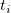
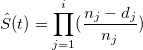
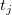
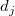

<h1 class="firstheading">アルゴリズム (kaplanmeier)</h1>
<p><br />
Kaplan-Meier法は、生存確率を推定するステップ関数 (<span class="Apple-converted-space">&#160;</span> , <i>i</i> = 1, 2, 3, ..., n)です。これは、観測しているイベントが発生する時間を表し、生存関数は次式で計算されます。</p>
<p>,</p>
<p>ここで<span class="Apple-converted-space">&#160;</span> は、時間<span class="Apple-converted-space">&#160;</span> におけるサンプル数で、は、時間における観測しているイベントと打ち切り観測の数です。</p>
<p>&#160;</p>
